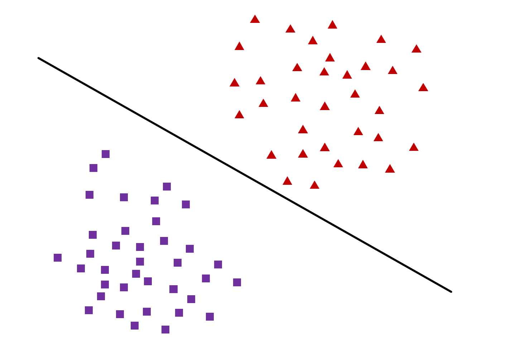
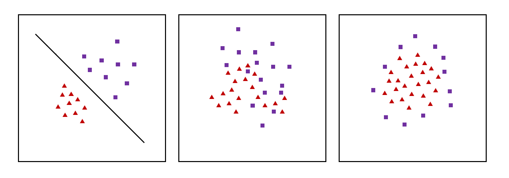
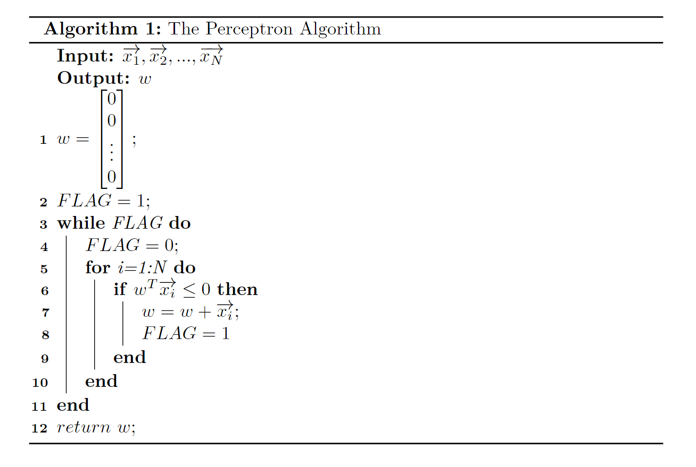
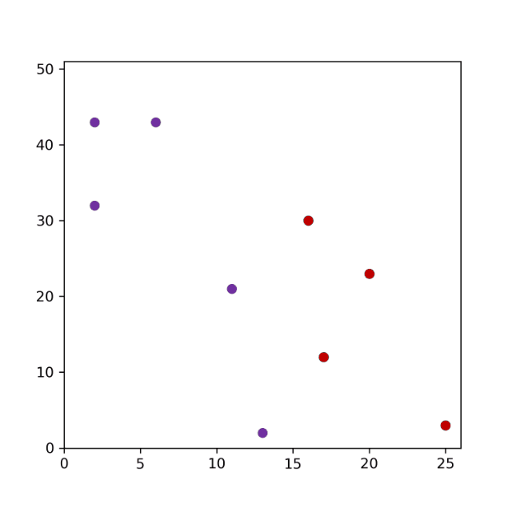

Perceptro Algorithm
The Perceptron algorithm is the simplest type of artificial neural network.
It is a model of a single neuron that can be used for two-class classification problems and provides the foundation for later developing much larger networks.

任务
输入: $ (\overrightarrow{x_{i}},y_{i}), i = 1 \sim N $
-
$\overrightarrow{x_{i}}$ —— 第$i$个训练样本的特征向量
-
$y_{i}=\pm1$ —— 第$i$个训练样本的类别
任务: 找出一个向量$\overrightarrow{w}$和一个常数$b$，使得对$i = 1 … N$，
-
若$y_{i}=+1$，则$\overrightarrow{w}^{T}\overrightarrow{x_{i}}+b>0$
-
若$y_{i}=-1$，则$\overrightarrow{w}^{T}\overrightarrow{x_{i}}+b<0$
方法
-
随机选择$w,b$
-
取一个训练样本$(\overrightarrow{x_{i}},y_{i})$
- 若$\overrightarrow{w}^{T}\overrightarrow{x_{i}}+b>0$，且$y_{i}=-1$，则：$\overrightarrow{w} = \overrightarrow{w}-\overrightarrow{x_{i}}, b = b-1$
- 若$\overrightarrow{w}^{T}\overrightarrow{x_{i}}+b<0$，且$y_{i}=+1$，则：$\overrightarrow{w} = \overrightarrow{w}+\overrightarrow{x_{i}}, b = b+1$
-
再取另一个训练样本$(\overrightarrow{x_{i}},y_{i})$，重复步骤二
-
终止条件: 直到所有样本$(\overrightarrow{x_{i}},y_{i})$都不满足步骤二中的两种情况，退出循环
分析第二步中的第一种情况(第二种情况同理)
$$
设 \overrightarrow{w}^{\prime} = \overrightarrow{w}
-\overrightarrow{x_{i}}, b^{\prime} = b-1
$$
有
$$
\overrightarrow{w}^{\prime T}\overrightarrow{x_{i}} + b^{\prime} \\ = {(\overrightarrow{w}-\overrightarrow{x_{i}})}^{T}+b-1 \\ = [\overrightarrow{w}^{T}\overrightarrow{x_{i}}+b] - {(\overrightarrow{x_{i}}^{T}\overrightarrow{x_{i}}+1)} \\ = [\overrightarrow{w}^{T}\overrightarrow{x_{i}}+b] - {({\Vert \overrightarrow{x_{i}} \Vert}^{2}+1)} \\ \leq [\overrightarrow{w}^{T}\overrightarrow{x_{i}}+b] - 1
$$
因此$ \overrightarrow{w}^{\prime T}\overrightarrow{x_{i}} + b^{\prime} $比$ \overrightarrow{w}^{T}\overrightarrow{x_{i}}+b $至少小了一
线性可分

在二维情况下，若存在一条直线能恰好把分布在特征空间(二维平面)中的点正确分为两类，则该样本集线性可分,如上图左一
线性可分数学定义：
-
训练样本$ \{(\overrightarrow{x_{1}},y_{1}), … ,(\overrightarrow{x_{N}},y_{N})\}, y_{i}=\pm1$
-
存在$ \overrightarrow{w},b $, 对任意$ (\overrightarrow{x_{i}},y_{i}) $有$ y_{i}(\overrightarrow{w^{T}}\overrightarrow{x_{i}}+b) \gt 0 $
算法实现
为了方便实现，我们对原有标记稍作修改
-
对于某个样本$ (\overrightarrow{x_{i}},y_{i}) $,我们重新将它定义为$ \overrightarrow{x_{i}} = y_{i}\begin{bmatrix} \overrightarrow{x_{i}} \\ 1 \end{bmatrix}
$ -
对于最终要找到的结果$ \overrightarrow{w},b $,重新将它定义为$ \overrightarrow{w} = \begin{bmatrix} \overrightarrow{w} \\ b \end{bmatrix}
$
于是原本的任务就可以简化为
-
求$ \overrightarrow{w} = \begin{bmatrix} \overrightarrow{w} \\ b \end{bmatrix}
$，使得对$ i = 1 … N $，有$ \overrightarrow{w^{T}}\overrightarrow{x_{i}} \gt 0 $
算法流程图

实践
code:
1 | import matplotlib.pyplot as plt |
output:
1 | tensor([[-13], |
为了让算法过程更加直观，我们修改一下代码，可视化算法运行过程。
code:
1 | import matplotlib.pyplot as plt |
output:
1 | tensor([[-13], |
经历865次迭代，我们的算法最终找到了这个问题的一个解 😄
以下是可视化结果
